전자계산기조직응용기사 (2005-08-07 기출문제)
1과목: 전자계산기 프로그래밍
1. 의사연산 테이블(pseudo operation table)에 대한 설명으로 가장 적절한 것은?
- 가변 데이터베이스로서 패스-1에서만 참조한다.
- 고정 데이터베이스로서 패스-1에서만 참조한다.
- 고정 데이터베이스로서 패스-1, 패스-2에서만 참조한다.
- 가변 데이터베이스로서 패스-1, 패스-2에서만 참조한다.
(정답률: 74%)

2. C 언어에서 임의의 수식을 다른 자료형으로 변환하기 위해 사용하는 연산자는?
- 비트연산자
- 캐스트연산자
- 관계 연산자
- 논리 연산자
(정답률: 83%)
3. PLC의 기능에 대한 설명으로 옳지 않은 것은?
- 인터럽트 처리가 가능하다.
- BCD 데이터와 비교가 가능하다.
- 디지털 스위치의 수치를 읽을 수 있다.
- 아날로그 데이터는 입력만 가능하다.
(정답률: 75%)
4. C 언어에서 참조호출(call by reference)의 효과를 얻기 위해 사용하는 형식 매개변수는?
- 주소 연산자(&)
- 간접값 연산자(*)
- 단항 연산자
- 증가 연산자
(정답률: 70%)
5. 어셈블리 언어에서 다음 주소지정 방식에 해당하는 것은?
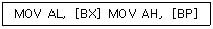
- 직접주소 지정방식
- 베이스주소 지정방식
- 인덱스주소 지정방식
- 베이스인덱스 주소지정방식
(정답률: 알수없음)
6. 어셈블리 명령어에서 부호있는 수의 나눗셈에 사용되는 명령어는?
- MUL
- DIV
- IMUL
- IDIV
(정답률: 79%)
7. C 언어에서 부호 없는 10진수 출력 명령은?
- %d
- %c
- %u
- %x
(정답률: 93%)
8. 어셈블리어의 특징을 잘못 설명한 것은?
- 어셈블리어는 모든 컴퓨터 기종에 공통으로 적용할 수 있다.
- 어셈블리어는 기계어에 가까운 언어이다.
- 어엠블리어는 기계어와 1대1로 대응시켜서 표현한 기호식 표기법이다.
- 어셈블리어에서는 데이터가 기억된 번지를 기호(symbol)로 지정한다.
(정답률: 70%)
9. PLC의 CPU 구성부가 아닌 것은?
- 메모리 부
- 연산제어 부
- 입출력제어 부
- 전원 부
(정답률: 82%)
10. 다음의 설명을 가장 잘 나타내는 용어는 무엇인가?
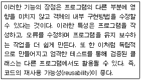
- 메소드
- 구조화
- 추상화
- 메시지 전송
(정답률: 67%)
11. PLC 프로그래밍 과정을 순서대로 바르게 나열한 것은?
- 기계동작의 사양 작성→입출력 할당→시퀀스 프로그램의 작성→데이터메모리 할당→로딩→테스트 운전
- 기계동작의 사양 작성→입출력 할당→데이터메모리 할당→시퀀스 프로그램의 작성→로딩→테스트 운전
- 기계동작의 사양 작성→시퀀스 프로그램의 작성→로딩→입출력 할당→데이터메모리 할당→테스트 운전
- 기계동작의 사양 작성→시퀀스 프로그램의 작성→로딩→데이터메모리 할당→입출력 할당→테스트 운전
(정답률: 54%)
12. PLC 프로그램 로더의 주요기능이 아닌 것은?
- 프로그램 기입
- 프로그램 판독
- 하드디스크 체크
- 프로그램 삭제
(정답률: 74%)
13. C 언어에서 공용체 선언시 관계있는 명령어는?
- struct
- union
- enum
- static
(정답률: 72%)
14. 어셈블리에서 연산에 사용되는 레지스터에 해당하는 것은?
- SP
- BP
- SI
- AX
(정답률: 알수없음)
15. 어셈블리에서 직접번지 지정방식의 명령은?
- MOV AX, 12
- MOV BL, CL
- MOV 모, [2000h]
- MOV AL, [Bh]
(정답률: 47%)
16. C 언어의 기본 자료형 중 정수형에 해당되지 않는 것은?
- short
- double
- unsigned long
- int
(정답률: 56%)
17. C 언어에서 사용하는 기억 클래스에 해당하지 않는 것은?
- auto 변수
- static 변수
- register 변수
- scope 변수
(정답률: 95%)
18. 하나 이상의 유사한 객체들을 묶어서 하나의 공통된 특성을 표현하는 것으로 자료 추상화의 개념으로 볼 수 있는 것은?
- 객체
- 클래스
- 메시지
- 메소드
(정답률: 78%)
19. PLC의 프로그램 방식 중 회로도 방식이 아닌 것은?
- 레더도 방식
- 동작도 방식
- 명령어 방식
- 로직 방식
(정답률: 알수없음)
20. 객체의 특징으로 옳지 않은 것은?
- .(도트)
- &
- *
- !
(정답률: 34%)
2과목: 자료구조 및 데이터통신
21. 두 개 이상의 개방형 시스템(QSI)의 데이터 전송을 위해 송신단과 수신단에 미리 정해둔 통신규약(약속)을 무엇이라 하는가?
- 프로토콜
- 인터페이스
- 컴퓨터통신
- 데이터통신
(정답률: 85%)
22. ISDN의 기본 인터페이스 채널 구조는?
- 23+D
- 30B+D
- 8B+D
- 2B+D
(정답률: 53%)
23. 데이터 통신용이나 마이크로컴퓨터에 많이 사용되는 코드는?
- BCD코드
- ASCII코드
- Gray코드
- EBCDIC
(정답률: 94%)
24. 데이터 통신망의 구성 형태가 아닌 것은?
- 성형
- 버스형
- 브리지형
- 루프형
(정답률: 59%)
25. 아래의 제어 절차 중 전송제어 절차가 바른 것은?
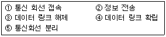
- ①→④→②→③→⑤
- ⑤→④→③→①→②
- ①→②→③→④→⑤
- ④→②→①→③→⑤
(정답률: 79%)
26. 분산처리 시스템의 종류에 속하지 않는 것은?
- 복합분산처리 시스템
- 일괄분산처리 시스템
- 수직분산처리 시스템
- 수평분산처리 시스템
(정답률: 59%)
27. 수신 스테이션은 비트 에러나 프레임의 손실을 검사하게 되고, 에러가 검출되면 자동적으로 송신 스테이션에게 재전송을 요청하는 자동 재전송 요청을 하게 되는데 다음 중 ARQ 방식이 아닌 것은?
- Go-back-N ARQ
- 정지-대기(Stop-and-Wait) ARQ
- 선택적 재전송(Selective-Report) ARQ
- 슬라이딩 윈도우(Sliding-Windows) ARQ
(정답률: 82%)
28. 주파수 분할 다중화에 대한 설명 중 옳지 않은 것은?
- 주파수 대역폭을 적은 대역폭으로 나누어 사용한다.
- Time Slot을 이용한다.
- 가드밴드의 이용으로 대역폭의 이용률이 낮아진다.
- 시분할 다중화에 비해서 구현이 간단하다.
(정답률: 70%)
29. X.25의 3레벨 프로토콜이 아닌 것은?
- 패킷 레벨 프로토콜
- 프레임 레벨 프로토콜
- 물리 레벨 프로토콜
- 전송 레벨 프로토콜
(정답률: 48%)
30. VAN이 제공하는 4가지 기능의 큰 분류에 속하지 않는 것은?
- 전송 기능
- 실시가 기능
- 교환 기능
- 정보처리 기능
(정답률: 56%)
31. 선형리스트(Linear list)에 해당하지 않는 자료 구조는?
- stack
- queue
- tree
- deque
(정답률: 82%)
32. 다음 트리의 차수(degree)는?
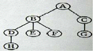
- 2
- 3
- 4
- 7
(정답률: 79%)
33. DBMS의 필수 기능이 아닌 것은?
- 데이터 조작
- 데이터 정의
- 데이터 변경
- 데이터 제어
(정답률: 79%)
34. 색인 순차화일(ISAM)의 인덱스 영역과 관계없는 것은?
- Track index area
- Cylinder index area
- Master index area
- Control index area
(정답률: 87%)
35. 데이터베이스 스키마 중에서 논리적인 데이터베이스의 전체 구조를 나타내는 것은?
- 내부 스키마
- 외부 스키마
- 개념 스키마
- 서브 스키마
(정답률: 60%)
36. 해싱(hashing)에서 동일한 버켓 주소를 갖는 레코드들의 집합을 의미하는 것은?
- collision
- synonym
- slot
- folding
(정답률: 82%)
37. 포스트오더(postorder)로 순회한 결과는?
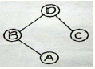
- DBAC
- BADC
- ABCD
- CABD
(정답률: 75%)
38. 이진수 00001101에 대한 2의 보수는?
- 11110011
- 11110010
- 11110111
- 11111010
(정답률: 59%)
39. 스택과 관계있는 내용은?
- 데이터의 삽입과 삭제가 한쪽 끝에서만 이루어진다.
- 선형 리스트의 양쪽 끝에서 삽입과 삭제가 가능하다.
- 입력은 한쪽에서, 출력은 양쪽에서 이루어진다.
- 선입선출(FIFO) 구조이다.
(정답률: 67%)
40. 데이터베이스관리자(DBA)의 역할로 거리가 먼 것은?
- 응용 프로그램의 개발 및 분석
- DBMS 시스템 자원의 이용도 분석
- 데이터 표현 및 문서화의 표준 설정
- 데이터베이스 설계 및 조작
(정답률: 72%)
3과목: 전자계산기구조
41. 그림과 같은 카운터를 정확하게 표현한 것은?
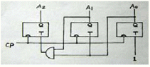
- 3비트 2진 카운터
- 3비트 5진 카운터
- 3비트 8진 카운터
- 3비트 3진 카운터
(정답률: 20%)
42. 인터럽트를 처리한 후 다음으로 전환되어야 할 메이저 상태는?
- Fetch
- Direct
- Execute
- Indirect
(정답률: 50%)
43. 컴퓨터 시스템과 주변 장치간의 데이터 전송 방식에 해당되지 않는 것은?
- 루프 입출력 방식
- DMA 방식
- 인터럽트 입출력 방식
- 프로그램 입출력 방식
(정답률: 47%)
44. Interrupt cycle에 대한 micro-operation 중에서 관계가 없는 것은?
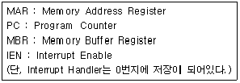
- MAR ← PC, PC ← PC+1
- MBR ← MAR, PC ← 0
- M ← MBR, IEN ← 0
- GO TO fetch cycle
(정답률: 20%)
45. 명령어 형식(instruction format)이 opcode, addressing mode, address의 3 부분으로 되어 있는 컴퓨터에서 주기억 장치가 1024 워드일 경우 명령의 크기는 몇 비트로 구성되어야 하는가? (단, op-code는 4비트 이며, addressing mode는 직접/간접 주소지정방식 구분에만 사용한다고 가정한다.)
- 10
- 15
- 20
- 25
(정답률: 67%)
46. 0-번지(zero-address) 명령형을 갖는 컴퓨터 구조의 원리는 어느 것을 사용하는가?
- accumulator extension register
- virtual memory architecture
- stack architecture
- micro-programming
(정답률: 70%)
47. 인터럽트 우선순위 체제의 방법이 아닌 것은?
- 폴링
- 인터럽트 요청 체인
- 인터럽트 서비스 루틴
- 인터럽트 우선순위 체인
(정답률: 47%)
48. 다음 명령의 수행 시 거치지 않는 사이클은?
- Fetch cycle
- Indirect cycle
- Execute cycle
- Interrupt cycle
(정답률: 55%)
49. 다음 보기의 명령들은 연산자의 기능 중 어디에 속하는가?
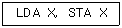
- 함수연산기능
- 제어기능
- 전달기능
- 입출력기능
(정답률: 54%)
50. 다음은 명령어 형식에 대한 설명이다. 옳은 항은?
- 명령은 보통 OP코드부분과 오ㅓ랜드 부분으로 나누며 오퍼랜드는 수행해야 할 동작을 명시하는 부분이고, OP코드는 연산의 대상물이다.
- 기억장치의 주소나 레지스터를 지정하거나 실제 데이터 값을 가지고 있는 부분이 오퍼랜드이다.
- 오퍼랜드의 비트 수가 n비트인 경우 2n 가지의 서로 다른 동작을 수행할 수 있다.
- 오퍼랜드는 유효번지를 결정하기 위한 모드 비트를 가질 수 없다.
(정답률: 74%)
51. 입출력 동작 시 하드웨어적으로 우선순위를 결정하는 방식은?
- 폴링 입출력
- 핸드셰이킹 입출력
- 데이지-체인 입출력
- 다중 인터럽트 입출력
(정답률: 70%)
52. 명령 레지스터에 호출된 OP code를 해독하여 그 명령을 수행시키는데 필요한 각종 제어 신호를 만들어내는 장치는?
- Instruction Decoder
- Instruction Encoder
- Instruction Counter
- Instruction Multiplexor
(정답률: 67%)
53. 다음 논리회로에 의해 계산된 결과 X는?
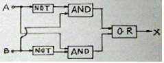
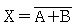
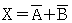
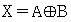
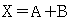
(정답률: 57%)
54. 간접 사이클(Indirect cycle)을 옳게 나타낸 마이크로오퍼레이션은?
- MAR←MBR(AD)
MBR←M(MAR) - MAR←PC,
MBR←M(MAR), PC←PC+1
OPR←MBR(OP), I←MBR(I) - MAR←MBR(AD),
MBR←AC,
M←MBR - MAR(AD)PC, PC←0,
MAR←PC, PC←PC+1
M←MBR, IEN←0
(정답률: 47%)
55. 명령어의 연산자 코드가 8비트, 오퍼랜드가 10비트일 때 이 명령어로 몇 가지 연산을 수행하게 할 수 있는가?
- 8
- 18
- 256
- 1024
(정답률: 82%)
56. 인터럽트 서비스가 진행되면 다른 인터럽트를 금지시켜야 하는데 이 때 변경시켜야 하는 flag는 무엇이며, 어떻게 변경하여야 하는가?
- IEN ← 1
- IEN ← 0
- VAD ← 0
- VAD ← 1
(정답률: 93%)
57. 폰 노이만형의 컴퓨터 연산장치가 갖는 기능 중에 속하지 않는 것은?
- 제어 기능
- 함수 연산 기능
- 전달 기능
- 번지 기능
(정답률: 67%)
58. 인터럽트 요청신호 플래그를 차례로 검사하여 인터럽트의 원인을 판별하는 방식은?
- 스트로브 방식
- 데이지체인 방식
- DMA 제어기
- 하드웨어 방식
(정답률: 알수없음)
59. 입출력에 필요한 하드웨어 기능으로 적합하지 않은 것은?
- 입출력 버스
- 입출력 인터페이스
- DMA 제어기
- 메모리 제어기
(정답률: 39%)
60. 연관(associative) 기억장치에 대한 설명이 아닌 것은?
- 주소를 필요로 하지 않는다.
- 주소 공간의 확대가 목적이다.
- CAM(Content Addressable Memory)이라고도 한다.
- 데이터의 내용에 의해 접근되는 메모리 방식이다.
(정답률: 73%)
4과목: 운영체제
61. UNIX의 디렉토리 구조는 어떠한 구조인가?
- single level directory
- two level directory
- tree structured directory
- hashing structured directory
(정답률: 67%)
62. 컴퓨터 시스템을 교란시킬 목적으로 작성된 악성프로그램들에 대한 설명으로 옳지 않은 것은?
- 트랩도어 : 일반적인 보안 절차를 거치지 않고 프로그램에 의해 시스템에 접근할 수 있는 비밀 침입정이다.
- 논리폭탄 : 합법적인 프로그램 내에 내재된 코드로서 어떤 조건이 만족되면 예기치 않은 동작으로 시스템에 해를 끼친다.
- 웜 : 전자우편, 원격로그인 등을 통해 자신을 복사 하여 다른 시스템으로 자신의 복사본을 전파한다. 이것의 유일한 목적은 자신을 복사하는 것이므로 시스템에 아무런 해악을 끼치지 않는다.
- 디도스 : 특정 서버에게 수많은 접속 시도를 발생시켜 다른 이용자가 정상적으로 서비스 이용을 하지 못하게 한다.
(정답률: 75%)
63. PCB(Process Control Block)가 가지고 있는 정보가 아닌 것은?
- 프로세스 식별자
- 프로세스의 현재 상태
- 할당자원에 대한 포인터
- 모든 프로세스의 상태에 대한 조사와 통제정보
(정답률: 60%)
64. 시분할 시스템의 스케줄 알고리즘에 가장 적합한 것은?
- Round-Robin
- SJT
- FIFO
- SRT
(정답률: 74%)
65. 페이지 기억장치 할당기법에서, 한 페이지의 크기가 512바이트이고 페이지 번호는 0부터 시작한다면 논리적인 주소 1224 번지는 어디로 변환되는가?
- 페이지 1, 변위 200
- 페이지 200, 변위 1
- 페이지 2, 변위 200
- 페이지 200, 변위 2
(정답률: 70%)
66. 다음의 시스템 소프트웨어 중 나머지 셋과 성격이 다른 것은?
- 로더
- 인터프리터
- 어셈블러
- 컴파일러
(정답률: 74%)
67. ISAM 파일을 구성하고 있는 기본적인 영역에 포함되지 않는 것은?
- Overflow Area
- Prime Area
- Index Area
- Block Area
(정답률: 50%)
68. 페이징(paging) 기법과 관련이 없는 것은?
- 가상기억 장치
- 외부 단편화 현상
- 교체(swapping)
- LRU 알고리즈
(정답률: 46%)
69. 운영체제에 관한 설명으로 옳지 않은 것은?
- 컴퓨터 시스템의 한정된 자원들을 효율적으로 사용하게 하는데 그 목적이 있다.
- 사용자 프로그램은 운영체제 호출을 이용하여 운영체제의 서비스를 호출한다.
- 운영체제는 일종의 시스템 명령어이므로 사용자들이 운영체제가 직접상호 작용할 수 없다.
- 운영체제는 하드웨어와 사용자 사이의 인터페이스로서 작동한다.
(정답률: 67%)
70. 분산처리 시스템에 대한 설명으로 옳지 않은 것은?
- 사용자는 각 컴퓨터의 위치를 몰라도 지원을 사용할 수 있다.
- 업무량 증가에 따른 시스템 확장이 용이하다.
- 중앙 집중형 시스템에 비해 소프트웨어 개발이 쉽다.
- 여러 사용자가 데이터를 공유할 수 있다.
(정답률: 54%)
71. 다중 처리기(Multi-Processor) 시스템에 대한 설명으로 옳지 않은 것은?
- 대칭적 다중처리 방식과 비대칭적 다중 처리 방식이 있다.
- 매우 밀접한 통신을 하는 하나 이상의 처리기들을 가지며 컴퓨터 버스, 클럭, 메모리와 주변장치를 공유한다.
- 비대칭적 다중 처리 방식은 별도의 주 처리기만이 운영체제를 수행하며 제어를 담당한다.
- 대칭적 다중처리(SMP) 방식은 처리기간에 주종간의 관계가 설정되어 있어 우아한 퇴보를 기대할 수 있다.
(정답률: 67%)
72. 유닉스의 i-node에 포함되는 정보가 아닌 것은?
- 디스크 상의 물리적 주소
- 파일 소유자의 사용자 식별
- 파일이 처음 사용된 시간
- 파일에 대한 링크 수
(정답률: 65%)
73. 인터럽트의 종류 중 외부 인터럽트에 해당하지 않는 것은?
- 타이머에 의한 인터럽트
- 콘솔의 인터럽트 키에 의한 인터럽트
- 입출력 완료시 입출력 기기에 의한 인터럽트
- 다른 프로세서로 부터의 신호에 의한 인터럽트
(정답률: 알수없음)
74. UNIX의 쉘(shell)에 대한 설명 중 가장 적합한 것은?
- 명령어를 해석한다.
- UNIX 커널의 일부이다.
- 문서처리 기능을 갖는다.
- 디렉토리 관리 기능을 갖는다.
(정답률: 56%)
75. HRN 스케줄링에서 우선순위 계산식으로 올바른 것은?
- (대기시간+서비스시간)/서비스시간
- (대기시간+서비스시간)/대기시간
- (대기사긴+응답시간)/응답시간
- (대기시간+응답시간)/대기시간
(정답률: 39%)
76. 디스크 대기 큐가 65, 112, 40, 16, 90, 165, 35이고 입출력 헤드의 처음 위치가 100, 전체 트랙길이가 200일 때 트랙 접근 순서가 90, 65, 40 35, 16, 112, 165이고 헤드 이동거리가 10, 25, 25, 5, 19, 96, 53이라면 사용된 디스크 스케줄링 기법은?
- SCAN
- LOOK
- S-SCAN
- FCFS
(정답률: 알수없음)
77. 컴퓨터 시스템의 성능 평가에서 생산성에 관한 것이 아닌 것은?
- 처리량
- 생산율
- 자료 처리율
- 하드웨어 이용률
(정답률: 65%)
78. 유닉스 시스템에서 프로세스 관리, 입/출력 관리, 기억장치 관리 등의 기능을 수행하는 것은?
- kernel
- fork()
- utility
- shell
(정답률: 77%)
79. 스케줄링 기법에 관한 설명 중 옳지 않은 것은?
- 비선점 스케줄링은 프로세스가 CPU를 강제로 탈취할 수 없다.
- 실시간처리시스템은 주로 선점 CPU 스케줄링을 이용한다.
- 선점 스케줄링 기법은 많은 오버헤드를 초래한다.
- 선점 스케줄링 시스템은 응답 시간을 예측하기가 비선점 방식보다 용이하다.
(정답률: 70%)
80. 운영체제의 계층구조에서 하드웨어와 가장 관련이 많고 시간 관리, 프로세서 관리, CPU 스케줄링, 입출력 제어, 시스템 자원의 배분 등과 같이 컴퓨터 운영에 필요한 핵심 사항들을 처리하는 것은?
- 커널
- 기억장치 관리기
- 입출력 시스템
- 파일 관리기
(정답률: 82%)
5과목: 마이크로 전자계산기
81. 마이크로 전자계산기에서 사용되는 버스가 아닌 것은?
- 주소 버스
- ALU 버스
- 제어신호 버스
- 데이터 버스
(정답률: 82%)
82. 마이크로컴퓨터 운영체제의 기능과 거리가 먼 것은?
- 파일 보호
- 파일 디렉토리 관리
- 상주 모니터로의 모드 전화
- 사용자 프로그램의 번역 및 실행
(정답률: 65%)
83. 버퍼에 관한 설명 중 거리가 먼 것은?
- 입출력 장치와 중앙처리가의 처리속도 차이 때문에 필요하다.
- 주기억장치의 물리적인 주소 공간을 확장시키기 위해서 필요하다.
- 중악처리기와 주기억 장치 사이에 둘 수 있는 버퍼로는 캐시 메모리가 있다.
- 입출력 효과적으로 수행하기 위해서는 두 개 이상의 버퍼를 둘 수 있다.
(정답률: 57%)
84. SRAM과 DRAM의 설명으로 적합하지 않은 것은?
- SRAM은 리플레시가 필요 없다.
- DRAM은 휘발성 소자이다.
- SRAM은 캐패시터와 트랜지스터로 구성된다.
- DRAM은 집적도가 높아 고용량이 가능하다.
(정답률: 73%)
85. 중앙처리장치의 제어를 필요로 하지 않는 입출력 방법은?
- 메모리 맴에 의한 입출력
- DMA에 의한 입출력
- 인터럽트 제어에 의한 입출력
- 프로그램 제어에 의한 입출력
(정답률: 67%)
86. 8192 word의 용량을 갖고, 한 word가 8-bit인 Dynamic RAM이 있다. 이 RAM chip을 이용하여 64K 용량을 가진 16bit의 주기억장치를 설계하고자 할 때 필요한 chip의 수는 몇 개 인가?
- 8
- 12
- 16
- 32
(정답률: 75%)
87. 다음 기억소자 중 휘발성 기억소자는?
- Core memory
- RAM
- ROM
- Bubble memory
(정답률: 77%)
88. I/O 버스를 통하여 접수된 COMMAND에 대한 해석이 이루어 지는 곳은?
- 커맨드 디코더
- 상태 레지스터
- 버퍼 레지스터
- 인스트럭션 레지스터
(정답률: 85%)
89. 두 개의 데이터 가운데 한 개의 데이터는 CPU내의 누산기 레지스터인 ACC에 적재되어 있으며, 나머지 한 개의 데이터는 주기억장치의 특정 주소 또는 레지스터에 저장되어 있는 명령어 형식을 나타내는 명령어는?
- 0-주소 명령어
- 1-주소 명령어
- 2-주소 명령어
- 3-주소 명령어
(정답률: 65%)
90. 입출력 인터페이스 회로의 기본적인 기능이 아닌 것은?
- 데이터 형식의 변환
- 전송의 동기 제어
- 신호 레벨의 정확성 확보
- 입출력 장치의 상태 조사
(정답률: 45%)
91. 병렬 데이터 전송 방식에 대한 설명 중 옳지 않은 것은?
- 직렬 전송 방식에 비하여 전송선의 수가 많다
- 근거리 주변 장치와의 통신에 주로 사용된다.
- 직렬 전송 방식에 비하여 데이터 전송속도가 느리다.
- 한 번에 단위 데이터(보통 바이트)가 전송된다.
(정답률: 72%)
92. 인스트럭션 레지스터의 내용은 무엇을 통해 제어회로에 전달되는가?
- Memory Buffer Register
- Memory Address Register
- Encoder
- Decoder
(정답률: 57%)
93. 8비트 마이크로프로세서를 정확하게 정의한 것은?
- 모든 버스가 8라인으로 된 마이크로프로세서
- 데이터 버스가 8라인으로 된 마이크로프로세서
- 한어(Word)가 8비트로 된 마이크로프로세서
- 어드레스 버스가 8라인으로 된 마이크로프로세서
(정답률: 37%)
94. 동작 속도가 가장 빠른 기억소자는?
- ECL
- Schottky TTL
- TTL
- I2L
(정답률: 알수없음)
95. 좋은 소프트웨어가 갖는 특징으로 가장 옳지 않은 것은?
- 다른 시스템에 적용, 결합하는 등 응용성이 뛰어나다.
- 사용자가 이해하기 쉽다.
- 프로그램이 짧고, 간단하다.
- 전체적인 흐름을 추적하기 용이하다.
(정답률: 67%)
96. 다음 중 고급어가 아닌 것은?
- JAVA
- C++
- PASCAL
- Assembly
(정답률: 67%)
97. 버스에 관한 설명으로 옳지 않은 것은?
- CPU, Memory, I/O 등 각 구성단위 상호간에 필요한 정보를 교환하는 공동의 전송로이다.
- 버스를 사용하면 결선의 수를 줄일 수 있다.
- 데이터 버스와 어드레스 버스는 양방향 버스이며,제어 버스는 단방향 버스이다.
- 버스 방식을 사용하면 하드웨어의 변경 없이 확장 메모리 나 입출력기기를 순차적으로 접속함으로써 시스템 확장에 융통성이 생긴다.
(정답률: 67%)
98. 스택과 관련된 주소 방식은?
- 0-Address
- 1-Address
- 2-Address
- 3-Address
(정답률: 84%)
99. 반도체 기억소자로서 기억용량이 비교적 크고, refresh를 필요로 하는 read/write 기억장치는?
- DRAM
- SRAM
- EPROM
- PLA
(정답률: 84%)
100. 어드레스 선이 16비트로 구성되고, 데이터 선이 4비트로 구성 되어있는 메모리의 총 용량은?
- 64KB
- 32KB
- 16KB
- 8KB
(정답률: 24%)